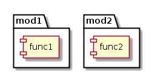
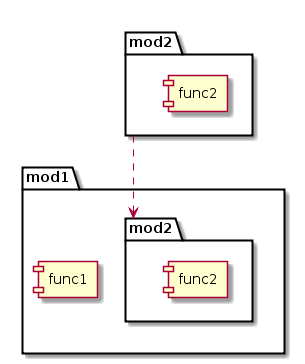
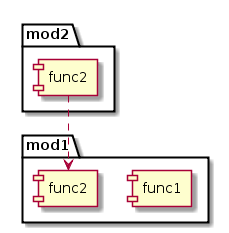

Fugindo para as Colinas Com Python
- Júlio Biason
- https://functional.cafe/@juliobiason
- https://t.me/juliobiason
- julio.biason@pm.me
- https://presentations.juliobiason.me
O Problema
- "Hello world" não é muito didático
- Escrever "Fujam para as colinas"
- ... com randomização de alguns elementos.
- Ex: "Cujam para as folinas", "Lujam para as cofinas" e "Nujam para as folicas"
Solução
"""Randomize a "Run to the hills" phrase."""
from __future__ import print_function
import random
from argparse import ArgumentParser
CONSONANTS = ['f', 'j', 'c', 'l', 'n']
PASSPHRASE = '{}u{}am para as {}o{}i{}as'
def print_phrase(consonants):
"""Print the phrase with the randomized consonants."""
print(PASSPHRASE.format(*consonants).capitalize())
def totally_random():
"""Run a totally random way."""
random.shuffle(CONSONANTS)
print_phrase(CONSONANTS)
def switch_two():
"""Run by changing two steps at a time."""
first = random.randint(0, 1)
second = random.randint(2, 4)
CONSONANTS[second], CONSONANTS[first] = \
CONSONANTS[first], CONSONANTS[second]
print_phrase(CONSONANTS)
def unknown():
"""We don't know what to do."""
print('Dude, option!')
if __name__ == "__main__":
args = ArgumentParser()
args.add_argument('-t', '--totally',
dest='type',
action='store_const',
const='totally',
help='Like, toootaly random')
args.add_argument('-s', '--short',
dest='type',
action='store_const',
const='switch'
help='Not so random')
result = args.parse_args()
callbacks = {
'totally': totally_random,
'switch': switch_two
}
func = callbacks.get(result.type, unknown)
func()Docstrings
"""Randomize a "Run to the hills" phrase."""
Módulos e imports
import random
from argparse import ArgumentParser
Módulos e imports
Módulos e imports
Módulos e imports
Variáveis e tipos
CONSONANTS = ['f', 'j', 'c', 'l', 'n']
PASSPHRASE = '{}u{}am para as {}o{}i{}as'
Variáveis e tipos (um pouco mais)
" ou ': Strings[]: Listas/arrays{}: Dicionários/mapas/objetos/arrays associativos(): TuplasSet(): Conjuntos (tipo lista, sem duplicações)
Funções
def print_phrase(consonants):
"""Print the phrase with the randomized consonants."""
Funções
def print_phrase(consonants, something_else):
Funcões
def soma(primeiro, segundo):
total = primeiro + segundo
return total
Funções
soma(1, 2)
Funções
soma(primeiro=2, segundo=3)
Funções
soma(segundo=3, primeiro=2)
Funções
def soma(primeiro=0, segundo=0):
soma()
soma(1)
soma(segundo=3)
Pausa: Varargs
def soma(primeiro, segundo):
total = primeiro + segundo
return total
soma(1)
soma(1, 2, 3)
Pausa: Varargs
TypeError: soma() takes exactly 2 arguments (3 given)
Pausa: Varargs
def soma(*valores):
Pausa: Varargs
def soma(*valores):
print(valores)
soma(1, 2, 3, 4, 5)
[1, 2, 3, 4, 5]
Pausa: Varargs
def soma(inicial, segundo=0, *valores):
print(inicial)
print(segundo)
print(valores)
soma(2)
2
0
[]
Pausa: Varargs
E o que acontece com parâmetros com nomes?
Pausa: Varargs
def soma(**valores):
print(valores)
soma(primeiro=1, segundo=2)
{'primeiro': 1, 'segundo': 2}
Pausa: Varargs
O legal de varargs (e o asterísco) é que ele funciona pros dois lados: Não só ele transforma parâmetros em lista, mas ele também pode funcionar para converter uma lista em parâmetros.
Pausa: Varargs
params = [4, 4]
soma(*params)
Pausa: Objetos
Sem entrar em detalhes sobre como criar objetos:
- Objetos tem métodos (funções associadas a um objeto)
- Para chamar um método, usa-se '.' e o nome do método
- Strings são objetos
Pausa: Objetos
"isso é uma string"
Pausa: Objetos
help("isso é uma string")
Pausa: Objetos
"isso é uma string".capitalize()
frase = "isso é uma string"
frase.capitalize()
Welcome to Hell
print(PASSPHRASE.format(*consonants).capitalize())
Welcome to Hell
O que sabemos:
PASSPHRASEé uma string..formatdeve ser um método de strings.consonantsé uma lista*consonantstá transformando a lista em parâmetroscapitalizetambém deve ser um método de strings
Welcome to Hell
Lembram que PASSPHRASE tinha
um monte de colchetes no meio?
.format() converte cada um
deles para um dos parâmetros passados.
Welcome to Hell
'Bem vindo {}!'.format('Júlio')
Bem vindo Júlio!
Welcome to Hell
PASSPHRASE = '{}u{}am para as {}o{}i{}as'
PASSPHRASE.format('f', 'j', 'c', 'l', 'n')
'fujam para as colinas'
Welcome to... Hell
CONSONANTS = ['f', 'j', 'c', 'l', 'n']
PASSPHRASE = '{}u{}am para as {}o{}i{}as'
PASSPHRASE.format(*CONSONANTS)
'fujam para as colinas'
Welcome to... Hell?
'fujam para as colinas'.capitalize()
Fujam para as colinas
Randomizações
def totally_random():
"""Run a totally random way."""
random.shuffle(CONSONANTS)
print_phrase(CONSONANTS)
Randomizações
def switch_two():
"""Run by changing two steps at a time."""
first = random.randint(0, 1)
second = random.randint(2, 4)
Welcome to hell, maybe?
CONSONANTS[second], CONSONANTS[first] = \
CONSONANTS[first], CONSONANTS[second]
Welcome to Listas!
# CONSONANTS = ['f', 'j', 'c', 'l', 'n']
# second = random.randint(2, 4)
CONSONANTS[second]
Welcome to Tuples!
Tuplas são como listas, só que não podem ser alteradas.
E pra criar uma tupla:
valor, valor
Ou mais bonitinho: (valor, valor)
Welcome to Destructuring
primeiro, segundo = [1, 2]
print(primeiro)
print(segundo)
1
2
Tudo junto, agora!
CONSONANTS[second], CONSONANTS[first] = \
CONSONANTS[first], CONSONANTS[second]
tmp = CONSONANTS[first]
CONSONANTS[first] = CONSONANTS[second]
CONSONANTS[second] = tmp
O Pai de Todos Módulos
if __name__ == "__main__":
A linha de comando
args = ArgumentParser()
args.add_argument('-t', '--totally',
dest='type',
action='store_const',
const='totally',
help='Like, toootaly random')
args.add_argument('-s', '--short',
dest='type',
action='store_const',
const='switch'
help='Not so random')
result = args.parse_args()
Funções são cidadãos de primeira classe
callbacks = {
'totally': totally_random,
'switch': switch_two
}
func = callbacks.get(result.type, unknown)
func()
O que faltou?
List comprehensions
numeros = [1, 2, 3, 4, 5, 6, 7, 8, 9, 10]
pares = [num
for num
in numeros
if num % 2 = 0]
Curiosidade: Strings são iteráveis como listas.
Generators
numeros = [1, 2, 3, 4, 5, 6, 7, 8, 9, 10]
pares = (num
for num
in numeros
if num % 2 = 0)
<generator object <genexpr> at 0x7f03ce4e67d0>